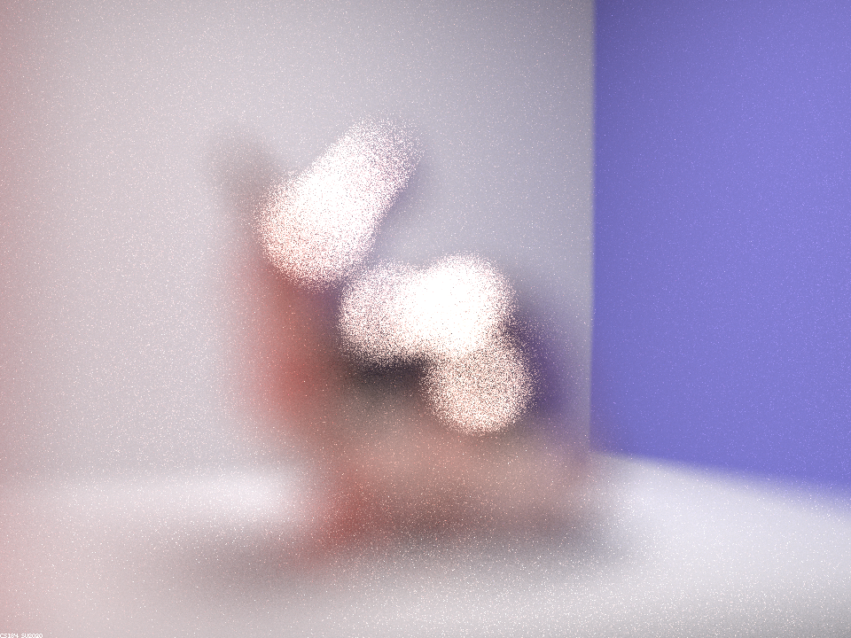

aperture 0.01, focal distance 4.5

aperture 0.06, focal distance 4.5
aperture 0.11, focal distance 4.5

aperture 0.21, focal distance 4.5
In this project I implemented Microfacet Material and Depth of Field. For Microfacet Material, the process involves implementing the BRDF evaluation function, Normal Distribution Function, Fresnel Term, and finally Importance Sampling. The main component of this part is importance sampling, where I importance sample the microfacet BRDF according to the shape of the Beckmann NDF according to the steps described in the project spec. In depth of field, the goal is to simulate thin lens to achieve the depth of field effect. This involves implementing a generate_ray_for_thin_lens function. It takes in two additional parameters, rndR and rndTheta which are used to uniformly sample the thin lens, compared to the generate_ray function from Project 3-1.
To implement the BRDF evaluation function, we need to use the following formula:
The functions used in this equation is either given or will be implemented later on. The macro surface normal, n, is given by (0, 0, 1) in local coordinates, and h is given by:
where v and l are wo and wi.
The normal distribution function is calculated by:
And the Fresnel term is calculated by:

where eta and k are taken directly from the dae files, which we can also customize by changing the values in the files to achieve the effect of different conductor materials.
Lastly we have importance sampling, where we have to find the appropriate sampled wi and pdf to be passed into the BRDF evaluation function and returned. We want to sample according to the Beckmann NDF and we find the following pdfs:
Then we can invert them to sample them:
where r1 and r2 are two uniformly sampled numbers. The found theta and phi are the spherical coordinates of our vector h, which we need to reflect wo according to in order to obtain our sampled wi. The reflectance can be found, with wo as v and h as l, by:
Lastly, to find the pdf of this wi, we use the following functions:
where p_w(wi) is the final pdf. Additionally, we need to check that both wo and wi are valid in BRDF evaluation and if wi is valid in importance sampling.
The implementation of the above functions were relatively straightforward, although it is important to make sure that all signs were correct. Additionally, I made a mistake initially where I misunderstood the numerator of p_w(h) to be cross product (instead of multiplication) which resulted in a darker color than what the material is supposed to look like.
alpha = 0.005
alpha = 0.05
alpha = 0.25
alpha = 0.5
The alpha value corresponds to the roughness of the material. As we increase the alpha value, the surface of the dragon becomes more rough whereas a small alpha value creates a shinier and smoother dragon.
Importance Sampling
Cosine Hemisphere Sampling
As the images show, using cosine hemisphere sampling produces a lot of black spots and regions, since cosine hemisphere sampling converges a lot slower compared to importance sampling. In comparison, with the same settings, importance sampling is able to produce a more finished image within a similar amount of time.
Pure Silver
Pure Silver (Rough)
Iron
Iron (Rough)
For Silver (in RGB order): eta: 0.059193 0.059881 0.047366 and k: 4.1283 3.5892 2.8132
For Iron (in RGB order): eta: 2.8851 2.9500 2.6500 and k: 3.0449 2.9300 2.8075
The following diagram illustrates the relationship between the different spaces:
In this part, I implemented generate_ray_for_thin_lens, which takes in two additional parameters than generate_ray (from Project 3-1), rndR and rndTheta. These are two random numbers uniformly distributed in [0, 1) and [0, 2pi), and are used to uniformly sample the thin lens. The red ray is what ray we found in generate ray. pLens is the origin (in camera space) of the ray (blue ray in diagram) that we want to find. This is calculated by:
Next, pFocus is found by intersecting the red ray with the plane of focus. This can be found by ray-plane intersection. We first find t:
where p' is a point on the plane of focus (any point will do and we know that z=-focalDistance!) and N is the normal of the plane. The origin is the camera origin (red ray origin) and direction is the red ray direction, which we calculated in generate_ray. Then we can find the intersection location by plugging t back into r(t) = o + td and the direction (pFocus) can be calculated as the difference between this point and pLens. We can use pLens and pFocus (converted to world space) to create the ray we want to return.
Compared to a pin-hole camera where everything is in focus, a thin lens camera only focus on things at the focal distance. By changing the focal distance and aperture we can change the focus of the image we render. The thin lens model is more accurate to how real cameras and the human eyes work, as they don't have everything in focus like the pin-hole camera does.
aperture 0.1, focal distance 4.0
aperture 0.1, focal distance 3.5
aperture 0.1, focal distance 3.0
aperture 0.1, focal distance 2.5
aperture 0.01, focal distance 4.5
aperture 0.06, focal distance 4.5
aperture 0.11, focal distance 4.5
aperture 0.21, focal distance 4.5
From the images we can see that by adjusting the aperture and focal distance, we can achieve different focus of the scene.